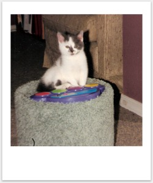
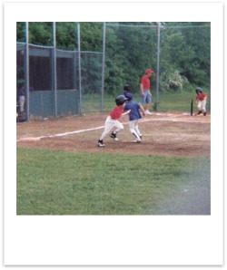
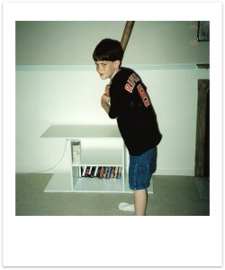

Second Grade (95'-96' - Age 7)
In the second grade my teacher was Mrs. Moore, and she was an older lady. She was very fond of me as a student, and so I remember feeling like a bit of a teachers pet in that class. One particular day she was teaching the class how to subtract double digit numbers, which I had already learned at home from my dad. She asked the class if anyone knew how to do this, and I was the only one who could, so she gave me a keychain that said “Number #1” on it. I remember feeling like quite the big shot that day.
It was while in Mrs. Moore's class that I had one of my most embarrassing elementary school moments. During class I was day dreaming away, rustling my fingers around in my desk, and for whatever reason decided it would be a good idea to see which of my fingers I could fit into the small hole at the top of my clipboard. I started with my pinkies and began working up to the larger fingers, but some of them wouldn't quite fit past my knuckles. I discovered that if I pushed a little harder I could get my ring finger all the way through, and then could pull it out without too much trouble. Next I tried my middle finger. It took a mighty push, but I got it past the knuckle, and then I gave it a good yank to pull it back out, but it wouldn't budge. I gave it a few more panicked yanks, frantically tried twisting it or squeezing it through, but nothing would work. As tears started to flow I sheepishly raised my hand, and when Mrs. Moore called on me I slowly pulled my clipboard out explained to her that I was stuck. She took me up to the sink in the front of the classroom and tried to use water to help free my finger, but had no success. She had me go to the office and another teacher worked on it, but as he shimmied it back forth he was just tearing up the skin. They ended up calling my Dad, and so he came in with a pair of wire cutting pliers to save the day. He wrapped them around the edge of the clipboard hole, gave it one quick squeeze and then I was freed. At the time I was scared out of my mind, but I'm pretty sure every one else, including my parents got a really good laugh out of it. Every now and then someone in the family will see a random advertisement or a TV show where someone gets a finger or a hand stuck, and instantly they'll turn to me and grin.
When I was 7 or 8 years old we got our first pet, a little grey and white cat named Augustus, after my great-grandfather on my Mom's side. He was only a few weeks old when we got him, so we were able to enjoy him as kitten, which to me is the funnest age for a cat. He was a spunky little cat; to the point where he was kind of an onery little guy. We enjoyed him for probably a year or so, but it got to the point where he was just to mean to keep around, and so we ended up giving him away. We definitely did have some fun with him while he was around; he produced one of my all-time favorite stories about our pets. It happened several months after we brought him home. All of us were up stairs, and we kept hearing the sound of a rap beat-box toy coming from the basement. We'd hear some random sound effect or hip-hop beat, and then nothing for several seconds or minutes, and then we'd hear it again. Finally someone went to go investigate, and there was gussy chilling in front of the rap pad just jamming out.
Second grade was the year I started playing T-Ball in what was called the South Berkeley Rec League. I can't remember exactly what inspired my desire to play baseball; it might have been a movie like Angels in the Outfield or The Sandlot, maybe I caught a bit of an exciting game on TV, or maybe it was from playing whiffle ball a couple times, but from this age on I absolutely loved baseball. My first T-ball team was the Senators, and my coaches last name was Selmar. I continue to play every year until I was in Middle School because I was scared away from hearing about a baseball accident where a young kid died. I was always super safety conscious, so I ended up taking a couple years off but came back to in 8th grade and my freshman year in high school.
I also loved watching baseball on TV, and the Baltimore Orioles become my favorite team. The Orioles happened to be the closest, and so the local team for me at the time, but that isn't actually the reason I picked them as my favorite. I happened to watch a game one night, the first time that I remember choosing to watch a game for myself, and the two team playing were the Orioles and the Yankees. At the time I knew absolutely nothing about either team; didn't know of anyone who liked or disliked either team, didn't know where they were located, and didn't know any of the players either. Instead I based my decision on their uniforms, and since I didn't like the pinstripes of the Yankees, I decided to root for the team with the solid white uniforms. It actually took an inning or so before I figured the names of the teams, and from then on I watch every Orioles games that I could. I learned all the players, kept track of their stats and learned everything I could about them. I even cut out newspaper clippings about the team and collected them in a little binder. I also started collecting baseball cards, just a few at a time, and today I've got boxes and boxes of them stored away at home. My favorite player was definitely Cal Ripken, a guy who played for the Orioles through his entire career. I think ended up with 20 or 30 baseball cards of him alone.
 I met one of my best friends as a kid around this time, Tyler Keys. He and his mother and sister were also members of the church, so he was one of my first good friends that was a member. I don't think that we ever had the same teacher in elementary school, but we'd see each other in the hall or during recess, and we would be best bud's in Sunday School. If I remember correctly I had my first ever sleepovers at Tyler's home, which was definitely a super exciting thing for me, and kind of big step for me, as these would have been my first nights without my own parents around. His mother is one of the nicest ladies I know, and I always had a great time over there. I remember playing different sports, jumping on the trampoline, playing Nintendo 64, watching movies, riding bikes around a trail through the woods behind his home, and playing laser tag.
On May 27th, 1996 I was baptized a member of the LDS church by my dad at our ward's building located on Lovelace Way in Martinsburg. It was a small service, with just my immediate family and my primary teacher, which is exactly the way I prefer things. It was in the evening after I had all my birthday celebrations, because I remember taking a couple of my new toys with me; if I remember right they were a couple of action figures, probably characters or dinosaurs from the movie Jurassic Park. I honestly can't remember whole lot about the ordinance itself, but I remember being excited about it, and feeling confident that I was doing the right thing.

Continue to "Third Grade" >>